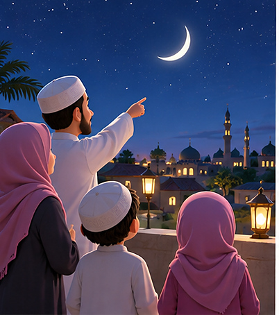
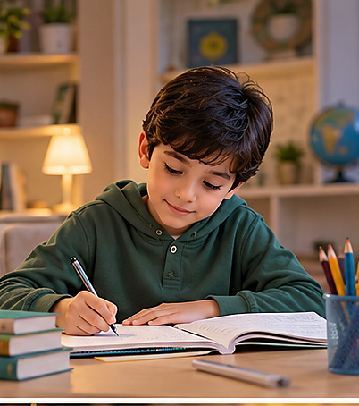
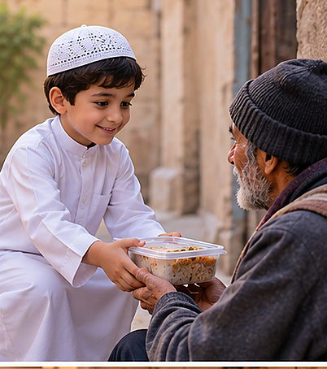
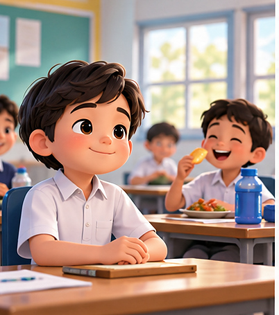
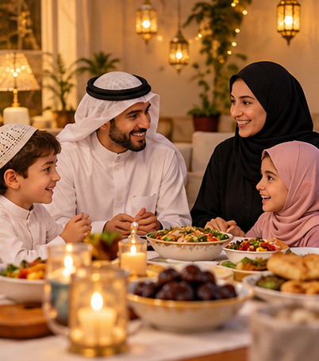
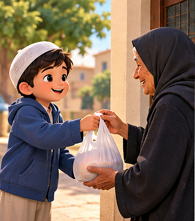

⛶
الصوم شهر الخير
رمضان شهر مليء بالخير والرحمة والفرح، نستقبله بالمحبة والطاعة.
كيف نستقبل شهر رمضان بفرح واحترام؟
ما هو الصوم؟
الصوم عبادة نتعلم فيها الصبر والالتزام والاهتمام بالوقت والسلوك الطيب.
ماذا يعني الصوم بالنسبة لك؟
ترقّب الهلال

عندما نرى هلال رمضان نشعر بالسعادة لأن شهر الخير قد بدأ.
بماذا تشعر عند بداية رمضان؟
السحور يعيننا
الاستعداد الجيد ووجبة السحور يساعداننا على النشاط والهدوء خلال النهار.
ما فائدة السحور للصائم؟
نحفظ ألسنتنا وأخلاقنا
الصوم لا يعني ترك الطعام فقط، بل يعني أيضًا الكلام الطيب والابتعاد عن الأذى.
ما السلوك الذي ينبغي أن نتجنبه ونحن صائمون؟
أقرأ القرآن في رمضان
في رمضان نحب قراءة القرآن بهدوء، لأنه يعلّمنا الخير ويقرّبنا من القيم الجميلة.
ماذا نتعلم عندما نقرأ القرآن في رمضان؟
الدعاء والذكر
في رمضان نكثر من الدعاء والذكر ونتمنى الخير لأنفسنا ولعائلاتنا ولجميع الناس.
ما دعاء جميل تحب أن تردده في رمضان؟
الإفطار مع العائلة
عند الإفطار نجتمع مع العائلة بفرح، ونشكر الله على نعمه بعد يوم الصيام.
ما السلوك الجميل الذي نحرص عليه عند الإفطار؟
أواصل دراستي في رمضان

في رمضان أواصل دراستي وأراجع دروسي، لأن الصوم لا يمنعني من النجاح والاجتهاد.
كيف توازن بين دراستك وعبادتك في رمضان؟
أساعد الآخرين في رمضان

من معاني رمضان الجميلة أن نساعد الآخرين ونقدّم الخير للمحتاجين بلطف واحترام.
اذكر طريقة بسيطة يمكن أن تساعد بها الآخرين في رمضان.
الصوم يعلمنا الصبر
عندما نصبر على الجوع والعطش نتعلم قوة الإرادة وضبط النفس.
ما الموقف الذي يظهر فيه صبرك في رمضان؟
أحترم الصائمين في المدرسة

في المدرسة نحترم الصائمين ونراعي مشاعرهم، ونلتزم بالهدوء والنظام وحسن التصرف.
كيف نُظهر احترامنا للصائمين داخل المدرسة؟
العائلة في رمضان

يجتمع أفراد العائلة في رمضان على المودة والتعاون والاهتمام ببعضهم.
ما أجمل شيء يعجبك في اجتماع العائلة في رمضان؟
رمضان يهذب السلوك

الصوم الحقيقي يجعلنا أكثر لطفًا وصدقًا وهدوءًا في التعامل مع الآخرين.
اذكر سلوكًا جميلًا ينبغي أن نتمسك به في رمضان.
الخلاصة
رمضان شهر الصوم والقرآن والرحمة والصبر، وفيه نتعلم أن نكون أفضل.
ما أهم فكرة خرجت بها من هذه المحاضرة؟
السابق
التالي